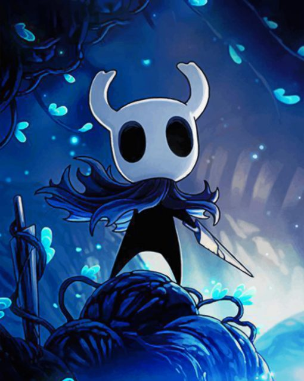
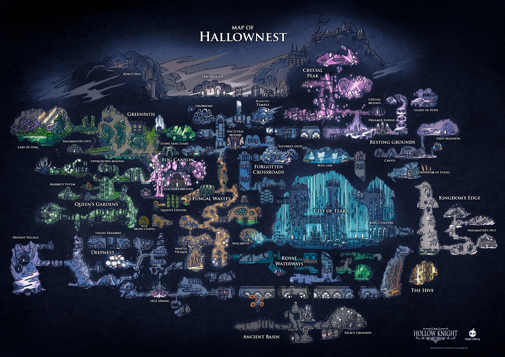

Hollow Khight
Historia de Hollow Khight

Hollow Knight
é um jogo de ação e aventura ambientado no reino subterrâneo de Hallownest,
que foi devastado por uma praga chamada
A Infecção
.
O protagonista, conhecido como
Cavaleiro
é uma criação sem alma (um
Vessel
) destinada a conter a Infecção.
Hallownest, governado por um rei e uma rainha,
caiu em ruínas após a Infecção ser desencadeada pela entidade divina
The Radiance
,
que se vingou ao ser rejeitada.
O Cavaleiro
ao explorar o reino,
descobre fragmentos da história e enfrenta diversos inimigos para tentar parar a Infecção.
A missão do Cavaleiro
sua missão é acabar com a Radiance e salvar o reino
mas a história tem um tom trágico
com múltiplos finais que refletem os sacrifícios e falhas na luta contra a escuridão.
O jogo
O jogo explora temas como o vazio
a eterna luta contra a corrupção e o ciclo de sacrifícios que parece se repetir.
O final depende das escolhas do jogador
com o Cavaleiro enfrentando diferentes desafios e sacrifícios para tentar pôr fim à Infecção.
O mapa do jogo

Gameplay do jogo